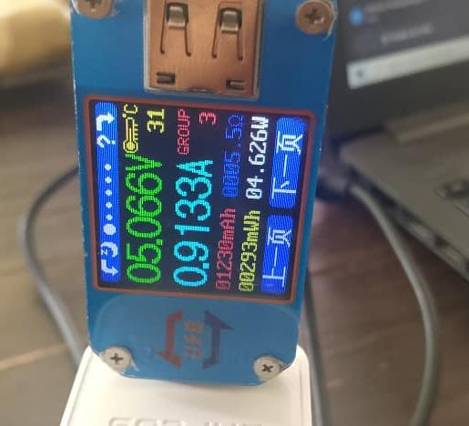
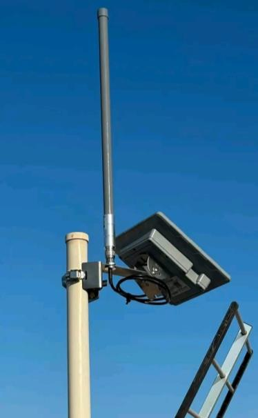
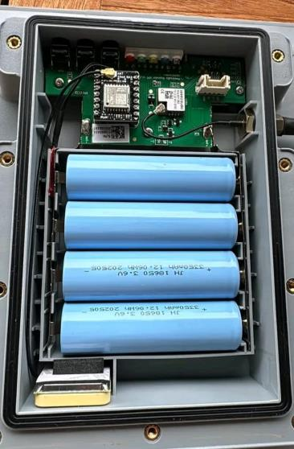

Conception électronique¶
Section en cours de complétion
Le dimensionnement de l'alimentation ci-dessous est finalisé. Le schéma bloc complet, le choix détaillé des composants et les schémas électriques/PCB seront ajoutés au fur et à mesure de l'avancement.
Ce qui doit encore y figurer :
- Schéma bloc de l'électronique (MCU, modules radio LoRa/BLE/HaLow, alimentation)
- Choix des composants et justification (voir le budget)
- Schémas électriques / routage PCB une fois disponibles
- Contraintes CEM et antennes
Dimensionnement de l'alimentation¶
Le réseau repose sur deux types d'équipements qui doivent chacun rester alimentés en continu, sans dépendre du secteur électrique : les stations relais déployées sur le terrain, et le Network Core qui centralise les communications. Chacun a été dimensionné séparément — consommation réelle, puis capacité de batterie et de panneau solaire nécessaires pour tenir au moins 24 heures d'autonomie, y compris sans soleil.
Stations relais (nœuds du réseau d'accès)¶
Chaque station relais est alimentée par un panneau solaire de 12 V / 30 W associé à une batterie lithium-ion de 3,7 V / 12 000 mAh, un système de gestion d'énergie assurant la régulation et la conversion vers les 5 V requis par la carte électronique. Le dimensionnement part d'une consommation continue mesurée de 200 mA sous 5 V, soit une puissance de 1 W (P = U × I) et un besoin journalier de 24 Wh pour un fonctionnement continu sur 24 heures.
| Paramètre | Valeur retenue |
|---|---|
| Consommation continue | 200 mA sous 5 V |
| Puissance consommée | 1 W |
| Énergie nécessaire par jour | 24 Wh |
| Batterie | Li-ion 3,7 V / 12 000 mAh |
| Énergie nominale de la batterie | 44,4 Wh |
| Énergie utile estimée (rendement 90 %) | ≈ 40 Wh |
| Autonomie théorique sur batterie seule | ≈ 40 h |
| Panneau solaire | 12 V / 30 W |
| Production théorique (4 h d'ensoleillement efficace) | 120 Wh/jour |
Avec un rendement global de 90 % (pertes de conversion et de gestion de charge), la batterie offre une énergie utile d'environ 40 Wh, soit près de 40 heures d'autonomie sur batterie seule — largement au-delà de l'objectif minimal de 24 heures, avec une réserve de 16 Wh. Côté production, le panneau de 30 W fournit environ 120 Wh par jour (sur une base de 4 heures d'ensoleillement efficace), soit cinq fois le besoin quotidien de 24 Wh : une marge confortable pour absorber les pertes du système et recharger la batterie même par ensoleillement réduit.
Network Core (cœur de réseau)¶
Le Network Core doit rester disponible en permanence, y compris pendant les périodes sans production solaire, puisqu'il gère et achemine les communications de l'ensemble des stations relais. Sa consommation réelle a été mesurée expérimentalement à l'aide d'un wattmètre USB UM25C, plutôt qu'estimée sur plaque signalétique.

La mesure a donné environ 0,906 A sous 5 V. Pour tenir compte des variations de charge et garder une marge de sécurité, le dimensionnement retient un courant de 1,5 A sous 5 V, soit une puissance de 7,5 W et un besoin énergétique journalier de 180 Wh.
| Paramètre | Valeur retenue |
|---|---|
| Consommation mesurée | 0,906 A sous 5 V |
| Courant de dimensionnement (marge de sécurité) | 1,5 A sous 5 V |
| Puissance de dimensionnement | 7,5 W |
| Besoin énergétique journalier | 180 Wh/jour |
| Batterie | LiFePO₄ 12,8 V / 18 Ah |
| Énergie nominale de la batterie | 230,4 Wh |
| Énergie utile (90 %) | 207,36 Wh |
| Autonomie théorique | ≈ 27,6 h |
| Panneau photovoltaïque | 12 V / 100 W |
| Régulation | MPPT |
| Conversion finale | 12,8 V → 5 V (DC-DC abaisseur / buck) |
| Production théorique (4 h solaires équivalentes) | 400 Wh/jour |
| Production utile estimée (rendement 75 %) | ≈ 300 Wh/jour |
| Marge énergétique quotidienne | 120 Wh/jour |
La chaîne d'alimentation retenue est donc : panneau photovoltaïque (12 V / 100 W) → régulateur MPPT → batterie LiFePO₄ (12,8 V / 18 Ah) → convertisseur DC-DC abaisseur → équipements 5 V du Network Core. Avec une énergie utile de 207,36 Wh sur batterie, l'autonomie théorique atteint environ 27,6 heures, au-delà de l'objectif d'une journée complète. Et malgré un rendement global plus conservateur de 75 % (température, câblage, régulateur, charge de la batterie), le panneau de 100 W produit environ 300 Wh par jour, largement au-dessus des 180 Wh nécessaires — une marge de 120 Wh/jour qui permet de recharger la batterie même après une nuit ou une période peu ensoleillée.
Vue d'ensemble physique d'une station relais¶
Le rendu final physique des stations relais qu'on compte obtenir :


Source
Dimensionnement repris de la note technique interne « Conception et développement d'un réseau maillé de communication LPWAN » (J. Ahanninkpo, département R&D, 6 septembre 2026).